AFTERBYTE MONO
v5.0.0REGULAR
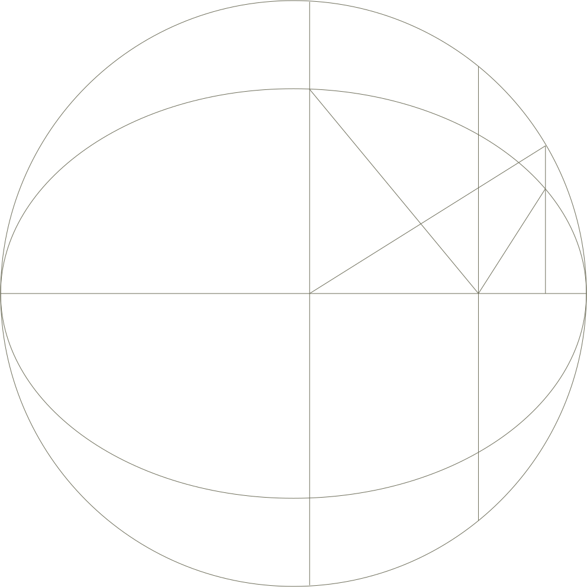
░ AFTERBYTE MONO IS A
░ TECHNICAL MONOSPACE WITH
░ AN INDEPENDENT CHARACTER
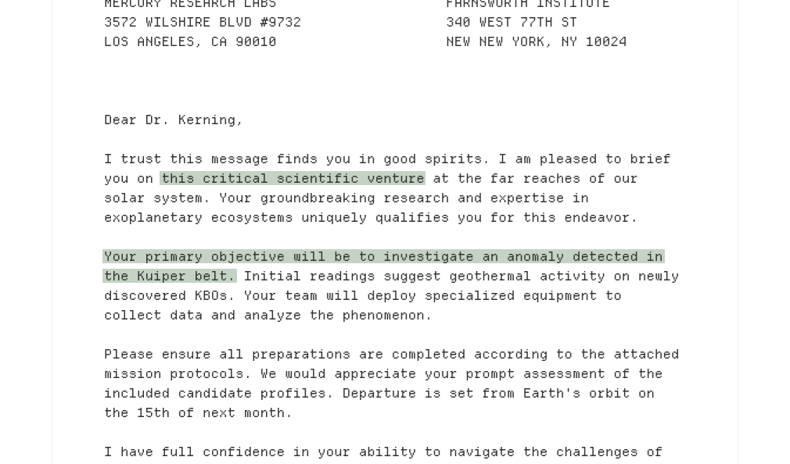
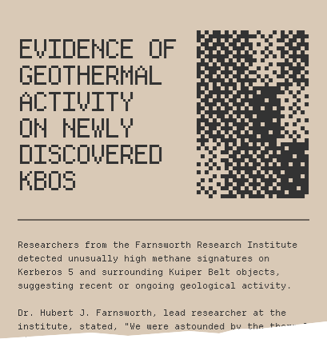
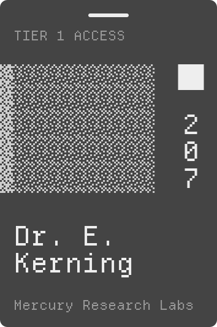
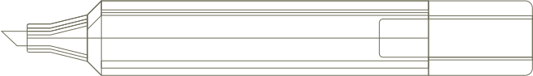
| Flight | Destination ↑ | Departing | Gate | Status |
|---|---|---|---|---|
| AB005 | EUR Europa Station | 13:45 | Z23 | Ready |
| AB650 | KBA Kuiper Alpha | 08:00 | 22 | On Time |
| AB249 | MAR Mars Landing | 09:15 | 12 | On Time |
| AB400 | NTK New Tokyo | 11:20 | C8 | Departed |
░ EQUAL WIDTH.
░ UNEQUALLED POSSIBILITIES.
░ MADE FOR TABULAR DATA.
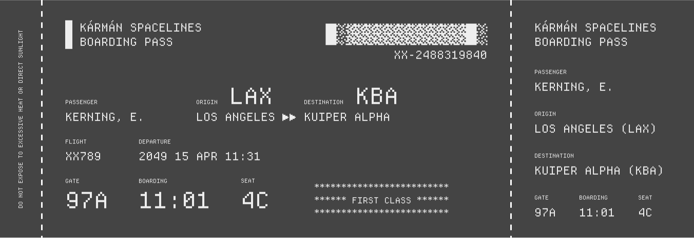
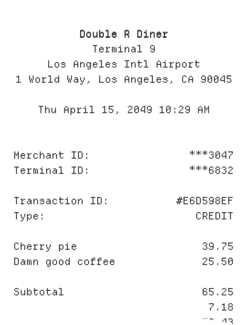
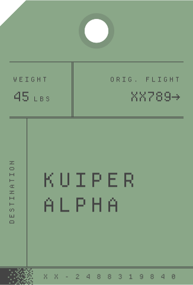
01 / TYPE IN THE WILD
EDIT YOUR OWN ↓HELLO,
TOMORROW.
GOOD IDEAS NEED
A LITTLE CHARACTER.
Equal space. Individual character. Afterbyte Mono pairs distinctive letterforms with the rhythm of a fixed-width grid. A flat-top A, a dotted zero, and single-storey a and g give practical text a voice of its own.
Use it in an interface, a code editor, a field guide, or an idea still taking shape. One Regular style. Four real font formats. Open to your next experiment.
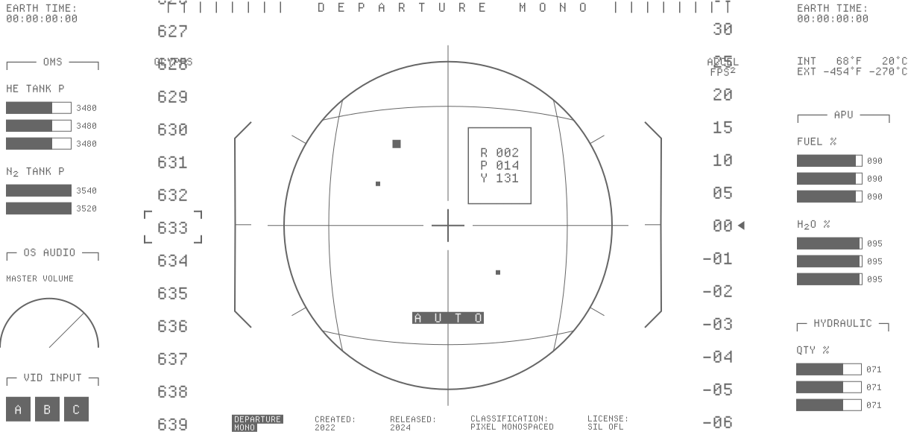
> AFTERBYTE MONO INITIALIZED > 2,499 UNICODE MAPPINGS > AWAITING TRANSMISSION_
Move through the specimen.
Tune the field. Make it yours.
A CHARACTER FOR EVERY KEY.
Click a key to add it to the tester.
Your text stays in this page.
03 / TYPE TESTER
Take it for a test.
Loading Afterbyte Mono…
Type your own text above. Your text stays in this page.
04 / CHARACTER EXPLORER
Find your characters.
2,499 Unicode characters plus one fallback glyph. Selected Latin, Greek, Cyrillic, technical symbols, mathematical styles and all 256 Braille patterns. Select a character to inspect it. Add it to the tester when you are ready.
LATIN CAPITAL LETTER A
U+0041Loading character index…
Coverage is a defined selection, not universal script support. Use supported precomposed characters and a fallback font. Combining-mark positioning, complex shaping, emoji and CJK are outside this build. Braille here is visual dot-pattern coverage.
05 / INSTALL & BUILD
Yours to use.
Yours to build with.
Install OTF or TTF for desktop use. Self-host WOFF2 with WOFF fallback on the web. The release includes CSS, exact coverage, source materials, license notices and checksums.
@font-face {
font-family: "Afterbyte Mono";
src: url("./AfterbyteMono-Regular.woff2")
format("woff2");
font-weight: 400;
font-style: normal;
font-display: swap;
}
.technical-text {
font-family: "Afterbyte Mono", monospace;
line-height: 1.75;
}Keep the font URL relative to your stylesheet.
06 / THE PRACTICAL PART
A few useful details.
What is included in the 2,500 glyphs?
2,499 assigned Unicode mappings and one .notdef fallback. That includes 95 printable ASCII characters, 716 additional Latin, 354 Greek, 377 Cyrillic, 504 technical/symbol characters, 256 Braille patterns and 197 mathematical-style mappings. Some Unicode characters legitimately share visual forms.
What can I do with the font?
The font is distributed under the SIL Open Font License 1.1. Commercial use and embedding are permitted under its terms. Preserve notices with redistributed font software; font software may not be sold by itself. Read the included license for the full conditions.
Who designed the glyphs?
The original 196-character Afterbyte core is by Krishanth. Selected expansion glyphs derive from OFL-licensed Noto Sans Mono, with retained attribution. Braille, additional technical operators and mathematical styles are constructed programmatically. Read the source record.
What has been tested?
Counts, source/coverage contracts, original core preservation, Braille bit patterns, mathematical distinctions, four-format metadata and bounds, per-character shaping and raster smoke checks, checksums and deterministic builds. Native-language review and broader application testing remain useful contributions. One Regular style is available.
Code and technical documentation
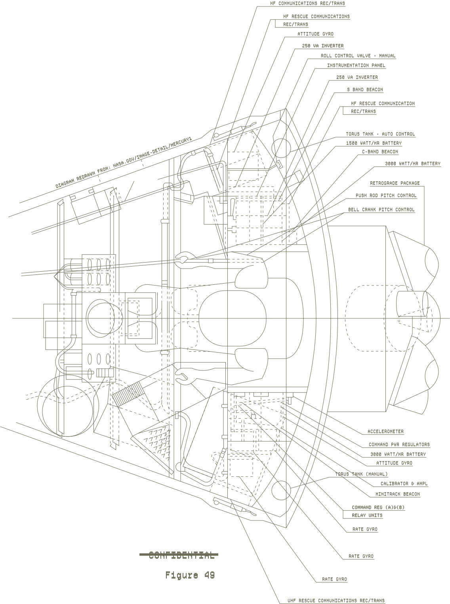
░ FOR YOUR CODE.
░ FOR YOUR DOCUMENTATION.
░ FOR YOUR NEXT EXPERIMENT.
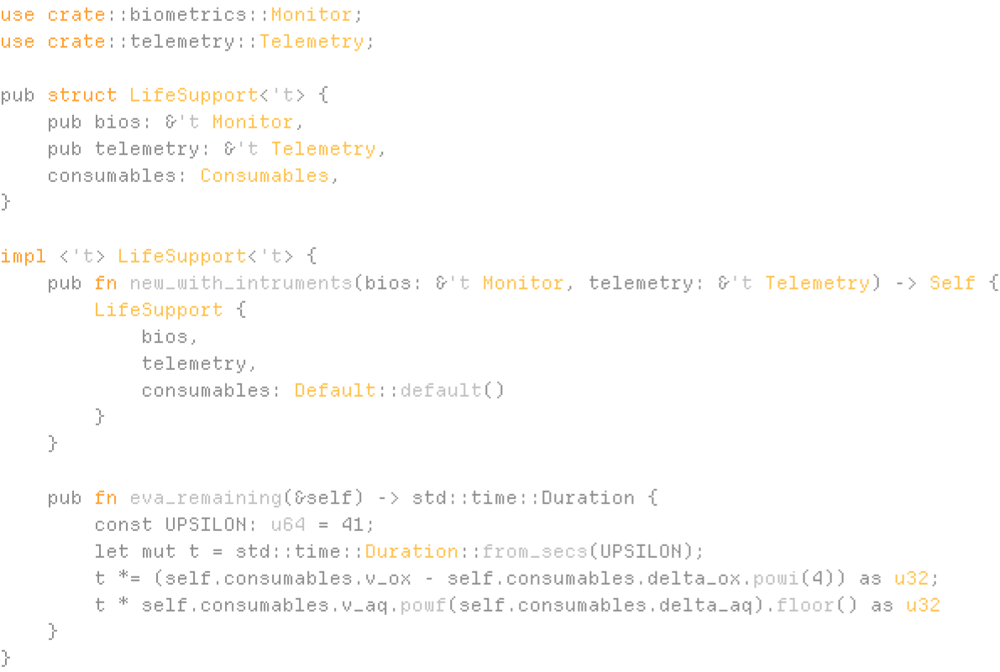
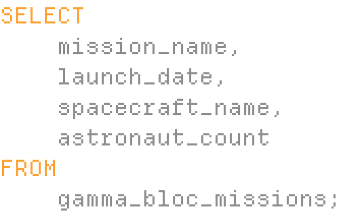
ONE MORE EXPERIMENT
AFTERBREAK
A small arcade specimen. Clear every block.
OPEN SOURCE / OPEN POSSIBILITIES
MAKE SOMETHING
WORTH READING.
Bring Afterbyte Mono into your next interface, experiment, or identity. Share what you make and help shape what comes next.